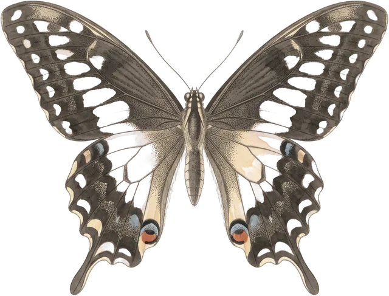

Gefühle & Regulation
Wutanfälle, Co-Regulation, Frustrationstoleranz und Selbstberuhigung.
Neugeborenes 0–3 Monate
Feinfühligkeit: Signale lesen lernen
Feinfühligkeit heißt: die Signale deines Kindes bemerken, sie einigermaßen richtig deuten, zügig reagieren und die Antwort so wählen, dass sie passt. …
7 Min. NeugeborenesWarum Babys schreien
Alle Babys schreien in den ersten Lebensmonaten mehr als danach – im Mittel rund zwei Stunden am Tag, verteilt über viele kleine Episoden, oft ohne …
8 Min.Säugling 4–12 Monate
Co-Regulation: ruhig bleiben, wenn das Kind es nicht kann
Kleine Kinder können sich nicht selbst beruhigen, weil die dafür zuständigen Hirnstrukturen noch jahrelang reifen. Sie leihen sich das ruhigere …
7 Min. SäuglingFremdeln und Trennungsangst
Zwischen dem sechsten und achten Lebensmonat fangen die meisten Kinder an zu fremdeln: Sie unterscheiden jetzt sicher zwischen vertrauten und …
7 Min. SäuglingTemperament: warum Kinder so verschieden sind
Dass Kinder von Geburt an unterschiedlich stark reagieren, sich unterschiedlich schnell beruhigen und unterschiedlich auf Neues zugehen, ist eines …
6 Min.Kleinkind 1–3 Jahre
Autonomiephase statt Trotzphase
Zwischen etwa 18 Monaten und dem vierten Geburtstag entdeckt dein Kind, dass es ein eigener Mensch mit eigenem Willen ist. Es will selbst …
6 Min. KleinkindBeißen, hauen, werfen
Fast alle Kleinkinder schlagen, beißen oder werfen irgendwann. Körperliche Aggression ist keine erlernte Fehlentwicklung, sondern die erste …
7 Min. KleinkindGefühle benennen lernen
Kinder kommen nicht mit Wörtern für ihre Gefühle auf die Welt. Sie bekommen sie von uns – dadurch, dass wir aussprechen, was wir sehen. Das Benennen …
6 Min. KleinkindWenn das Kind fast nichts mehr isst
Zwischen dem zweiten und dem sechsten Geburtstag wird fast jedes Kind wählerischer – das ist ein Entwicklungsschritt, keine Fehlentwicklung und …
8 Min. KleinkindEin Geschwisterkind kommt
Die Geburt eines Geschwisterkindes ist für das erste Kind kein freudiges Ereignis, sondern eine Entthronung – und es reagiert darauf mit genau den …
7 Min. KleinkindRituale und Tagesstruktur
Vorhersehbarkeit ist für Kinder keine Bequemlichkeit, sondern Entlastung: Wer weiß, was gleich passiert, muss weniger Energie in Wachsamkeit stecken. …
5 Min. KleinkindStreiten, wenn Kinder zuhören
Kinder nehmen Konflikte ihrer Eltern sehr genau wahr – aber sie reagieren nicht auf Lautstärke, sondern auf Bedrohung. Streit, der sachlich bleibt, …
5 Min. KleinkindTeilen, helfen, trösten: wie Prosozialität entsteht
Ein Zweijähriger, der seine Schaufel nicht hergibt, ist nicht egoistisch, sondern altersgemäß. Besitz zu begreifen und zu verteidigen ist ein eigener …
5 Min. KleinkindWutanfälle begleiten
Ein Wutanfall ist kürzer, als er sich anfühlt: Die meisten dauern unter fünf Minuten. Er hat einen typischen Verlauf – erst Wut, dann Kummer – und …
7 Min.Kindergartenalter 3–6 Jahre
Ängste bei Kindern
Fast jedes Kind hat in bestimmten Altersabschnitten Angst – vor Dunkelheit, vor Monstern, vor Hunden, vor dem Alleinsein. Das ist keine Fehlfunktion, …
8 Min. KindergartenalterFreundschaften und Konflikte unter Kindern
Freundschaft bedeutet für ein Vierjähriges etwas völlig anderes als für ein Neunjähriges: erst der, der gerade da ist und dasselbe spielen will, …
5 Min. KindergartenalterFrustration aushalten lernen
Frustrationstoleranz ist keine Charaktereigenschaft, sondern das Ergebnis einer langen Reifung: Die Hirnstrukturen, die einen Impuls bremsen, …
6 Min. KindergartenalterGeschwisterstreit
Geschwister streiten häufiger, als Eltern es aushalten – bei jüngeren Kindern mehrmals pro Stunde. Das ist keine gescheiterte Erziehung, sondern das …
7 Min. KindergartenalterTod und Trauer erklären
Kinder verstehen den Tod schrittweise: dass er endgültig ist und alle betrifft, begreifen die meisten zwischen fünf und sieben Jahren, ein …
6 Min.Schulkind ab 6 Jahren
Noten, Vergleich und Leistungsdruck
Noten messen einen Ausschnitt, an einem Tag, in einem Fach – nicht den Wert deines Kindes und nicht seine Zukunft. Trotzdem lösen sie zu Hause oft …
6 Min. SchulkindMobbing erkennen und handeln
Mobbing ist kein heftiger Streit, sondern etwas strukturell anderes: Es wiederholt sich, es gibt ein Machtungleichgewicht, und es geschieht …
9 Min.